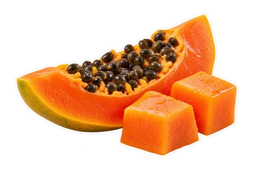
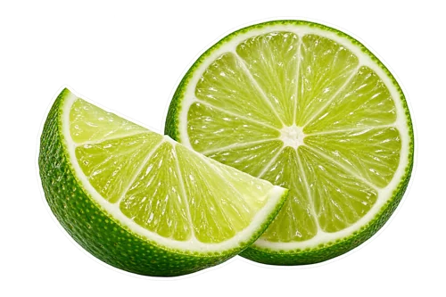

What you will need
Yield: 2 small glasses (about 2 cups). Final volume changes with fruit, straining, and liquid adjustments.

1½ cups ripe papaya cubes, peeled and seeded (about 210 g)- ½ cup plain yogurt (about 120 g)
- ½ cup cold water (120 ml), plus more as needed

2 teaspoons freshly squeezed lime juice- Optional: 1 teaspoon honey or maple syrup, to taste
- Optional: a few ice cubes if using fresh fruit
How to make it
Wash the outside of the papaya and lime. Cut the papaya open, scoop out all the black seeds, remove the skin, and cut the ripe flesh into cubes. Measure the prepared flesh rather than the whole fruit.
Put the water and plain yogurt in the blender first. Add the papaya and 2 teaspoons lime juice. If the papaya is frozen, use pieces your blender can handle and follow its instructions for frozen fruit.
Blend until smooth. Stop the blender before scraping down the sides, then blend again if needed. Add extra water a tablespoon at a time if the fruit is not circulating.
Taste before adding sweetener. Add the optional teaspoon only if you want it, or another small squeeze of lime if the blend tastes flat to you. Blend briefly to mix.
For a colder fresh-fruit smoothie, add a few ice cubes and blend again if your machine allows it. Pour into two small glasses and serve promptly.
Start with ripe papaya, not an unripe substitute
This is a smoothie for ripe, orange-fleshed papaya. Dole’s papaya guidance emphasizes ripeness and removing the skin; the prepared flesh is what belongs in the blender. If your fruit is firm and tastes unripe, wait until it is suitable for eating rather than trying to hide it with sweetener. Once opened, check the fruit’s condition before preparing it. A large papaya can yield several batches, but the smoothie measurement refers to the cubed flesh in your cup, not a fraction of an unspecified fruit.
Measure the fruit after removing seeds and skin
Scoop the seeds away with a spoon and trim any remaining skin from the cubes. Loosely fill a measuring cup rather than crushing the fruit into it. The approximate 210 g weight is another starting measure if you prefer a kitchen scale. Fruit pieces pack differently, so the final glass yield is approximate too. This is why we recommend adding water gradually rather than expecting every papaya to blend into exactly the same texture. A measured starting point helps you repeat the version you like without making the recipe rigid.
Why this recipe does not need banana
Banana is often used to thicken and sweeten a smoothie, but those jobs can be shared between ripe papaya and plain yogurt here. The papaya supplies the fruit base, and yogurt helps make the blend creamy. This recipe is specifically banana-free: adding banana would change both its taste and the texture adjustments. If avoiding banana is a preference, keep the fruit list short and explore the papaya flavor first. If you need to avoid an ingredient for an allergy, check all packaged ingredients and follow your own allergy guidance.
Fresh fruit and frozen fruit need different finishing touches
Fresh papaya blends into a softer drink, especially if it has not been chilled. Frozen cubes can make the same recipe thicker and colder. Keep the written water amount as your starting point, then add spoonfuls if the mixture needs help circulating. Avoid adding a full cup of extra liquid immediately. If using frozen fruit, you may not need the optional ice. If using fresh fruit, chilling the prepared cubes first gives you another way to cool the smoothie without adding as much melting ice to the finished drink.
Choose a yogurt that lets the papaya show
Plain yogurt keeps the flavor choices in your hands. A thick strained yogurt and a thinner plain yogurt will produce different textures, so use the water adjustment to suit the one you bought. Sweetened vanilla yogurt changes the base flavor and sweetness; if using it, leave out the optional sweetener at first. Read the ingredient label when choosing a yogurt for dietary needs. We do not attach a fixed protein claim to this recipe because products and portions vary. Choose the texture and ingredients you actually enjoy.
Make a dairy-free variation deliberately
For a dairy-free first trial, use ½ cup plain plant-based yogurt in place of dairy yogurt, keeping the papaya and lime amounts the same. Start with ¼ cup water rather than the full ½ cup if the alternative yogurt is particularly thin, then add more until the blend moves comfortably. Soy, coconut, and other yogurt alternatives can have quite different flavors and ingredient lists. Check that the product fits your needs, including any allergen concerns. A substitution can work as a useful variation without being nutritionally identical to the original.
Use lime as an adjustment, not the main flavor
Start with 2 teaspoons lime juice. Taste the blend, then add another ½ teaspoon if you want a brighter finish. Keep the lime peel out of the blender for this recipe; a wedge on the glass is enough if you want a garnish. If the drink is already too sharp, more sweetener is not your only option: blend in a few additional papaya cubes or a spoonful of yogurt first. Write down the lime amount you preferred so you can begin closer to that balance next time.
Fix a thin, thick, or uneven blend
For a drink that is too thick, add water by the tablespoon with the machine stopped between adjustments. For one that is too thin, try a few more papaya cubes or a spoonful of thick yogurt rather than immediately adding more ice. If pieces are staying at the top, stop and redistribute the contents according to the blender’s instructions. A small batch needs a container suited to that volume. Never reach into the blender while it is running, and do not force a machine to process frozen fruit it is not designed to handle.
Make one glass or two batches
For one small glass, halve the recipe: ¾ cup papaya, ¼ cup yogurt, ¼ cup water, and 1 teaspoon lime juice. Keep optional sweetener to a small taste adjustment. For a larger household batch, doubling makes 3 cups papaya, 1 cup yogurt, 1 cup water, and 4 teaspoons lime juice, but check the blender’s capacity before loading it. Two separate batches may be easier to blend consistently. Do not double blending time automatically; stop when the mixture is smooth, then check the flavor and thickness before pouring.
Save ingredients rather than a finished pitcher
If you have more papaya than you need, portion prepared cubes for another recipe instead of automatically making a large jug of smoothie. Keep the yogurt and lime separate until blending so you can adjust the next batch. If freezing fruit, follow food-safe preparation and storage guidance, and label the container with its contents and date. This approach also helps if you have limited freezer space: one small flat portion is easier to plan around than a large collection of bulky jars. See our smoothie meal-prep guide for more ways to organize ingredients.
Serving and keeping a portion
Prepare a small batch close to serving for the texture and temperature you enjoy. If saving some, cover and refrigerate promptly. Stir before serving and use any opened packaged ingredients according to their labels. Citrus and ginger do not make a homemade drink shelf-stable. Keep utensils and containers clean and handle cut produce and dairy or plant-based ingredients with care.
FoodSafety.gov recommends refrigerating perishable food within two hours, or one hour above 90°F, and keeping the refrigerator at 40°F or below.
Questions before you begin
Can I replace lime with lemon?
Yes, try the same 2 teaspoons as a starting amount, then taste. Lemon gives a different citrus finish, so adjust it to your preference rather than assuming it will taste identical.
Should papaya seeds go in the smoothie?
No. This recipe measures peeled, seeded flesh. Remove the seeds before measuring or freezing the fruit.
Can I use papaya nectar?
Nectar is a different ingredient from prepared fruit. It changes the liquid and sweetness balance, so it is not the direct substitution for the measured cubes in this recipe.
Preparation sources and recipe standards
These sources support specific ingredient forms and preparation choices. They do not establish kitchen testing of this recipe or health effects of the finished drink.
We use AI-generated photography-style images and ingredient cutouts. Actual appearance varies with ingredients and preparation. We do not describe this recipe as kitchen-tested. Read our recipe standards, and share a specific correction if a quantity or preparation step needs attention.